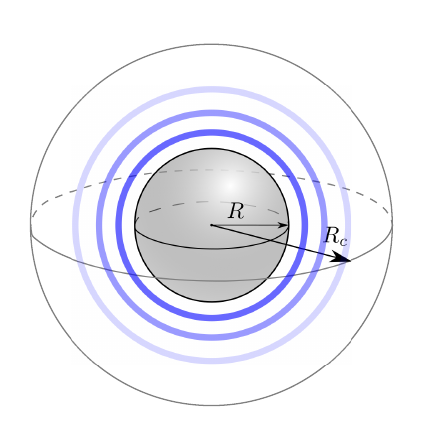
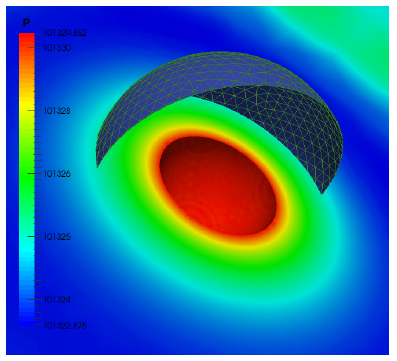
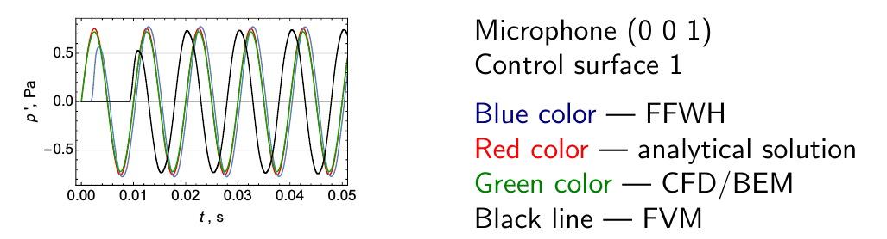

Преподаватель: Виктория Корчагова, ИСП РАН (Россия)
Сложность модуля: Расширенный
Тип модуля: Лекция с примерами
Программное обеспечение: OpenFOAM 4.1
Разработчики модуля:
Язык презентации: English
Описание:
Снижение уровня акустического шума является актуальной и важной задачей в авиации, судостроении, автомобильной промышленности и прочих областях машиностроения. Существует множество различных численных подходов для прогноза уровня акустического шума, таких как прямое численное моделирование распространения звуковых колебаний во всей расчетной области выбранным численным методом (методом конечных разностей, методом конечного объёма с гибридной URANS/LES технологиями или разрывным метод Галёркина); решение линеаризованных уравнений Эйлера; решение волнового уравнения или уравнения Гельмгольца; акустические аналогии. Область применимости двух последних подходов ограничена прогнозом шума в дальнем поле, в то время как первые два обычно используются для разрешения нелинейных эффектов в ближнем поле потока. Таким образом, результаты моделирования в ближнем поле могут служить исходными данными для численных моделей дальнего поля.
Учебный курс начинается с краткого введения в вычислительную аэроакустику (ВАА), обзора применяемых численных методов и возможностей, реализованных в библиотеке libAcoustics, включая описание простых верификационных примеров,
Действующая реализация библиотеки libAcoustics включает в себя следующие модели для ВАА анализа:
Вышеперечисленные возможности реализованы в библиотеке либо как пользовательские объекты functionObjects или самостоятельные приложения applications, предоставляющие интерфейс к сторонним библиотекам (BEM++).
На занятии рассматриваются вопросы реализации методов в рамках различных модулей библиотеки libAcoustics и верификационные задачи: моделирование монополя (см. рис.), диполя и тандема цилиндров в турбулентном потоке. После теоретической части слушателям будет предложено воспроизвести некоторые из рассмотренных примеров.

Результат решения уравнения Гельмгольца методом граничных элементов показан ниже.

В рамках занятия у слушателей будет возможность сравнить различные численные методы на примере задачи генерации шума монополем, см. рис. ниже.

Слушатели должны обладать хорошими навыками настройки расчётных случаев в OpenFOAM, уметь запускать и модифицировать учебные расчётные случаи, владеть базовыми знаниями в области программирования, уметь компилировать исходный код. Данный модуль является практическим занятием - лабораторной работой. Для выполнения заданий слушателю понадобится персональный компьютер с установленным пакетом OpenFOAM или возможностью загрузки с USB-образа.
Учебные материалы расположены на git-архиве в свободном доступе и могут быть загружены с ресурса http://www.github.com: